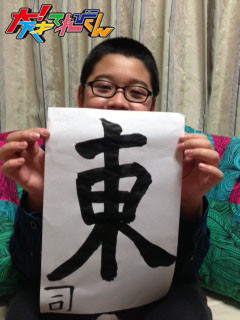

<<2013年11月 | トップページ | 2014年1月>>
2013年12月
【2013私の漢字】岡田結実
★2013私の漢字 ★
そーですね。。。
「新」ですね。
今年で中学生デビューで、
新しい学校、新しい友達、新しい出会い、全てが、新しくなりました。
去年は小学生だったから、まだ、天てれでは、お姉さんなどの自覚はあまりなかったけど、
中学生になってから、すごくお姉さんになったって自覚しました。
でも、やっぱたまに子供だなって思う時がありますね。
（まだ子供だけど、笑。）
新しい自分になったような気がします。
新しい友達ができたけど、やっぱり中学の友達より、おちつくのは小学校の時の友達（涙）
たまに会ったり、メールしたりすると、涙が出てきたりしますね。
遊んだりしたら、小学校に戻った気分。(笑)
新しい出会いも大切だけど、昔の出会いも大切だと思います。
来年もずっとずーっと、幸せが続きますように。
★冬を感じるとき ★
冬の空になってますよね
表し方がムズかしいんですが。
夏とちがう涼しい空！
空、大好きだから、よく見るんですけど、本当に違うんですょ。
空だけど、さびしそうな感じで、キレイなブルーの空。
夏は、雲が楽しそうに遊んでいて、元気になれる。
冬の空は、なぐさめてくれて、話を最後まで聞いてくれるみたいな。
たまには空を見て下さいっ。
投稿者:岡田結実 | 投稿時間:18時00分 | カテゴリ：We are 大天才テレビジョン | 固定リンク


 " title="ソーシャルブックマークについて">
" title="ソーシャルブックマークについて">
※NHKサイトを離れます。
【2013私の漢字】ソーズビー航洋
★2013私の漢字 ★
おはようございます。
こんにちは。
こんばんは。
ソーズビー航洋です！
僕の今年の漢字は、ズバリ『成』です。
これは、成長の成です！
声変わりや身長ももちろんですが、生活面でも成長したと思います。
最近からですが、22時にはきちんと寝るようにしてますし、
小学生のころは、勉強に向ける矢印なんて、これっぽっちも無かったのですが、
今ではテスト2週間前から毎日3時間はするようにしています。
点数はなんとも言えないのですが・・・笑
あと、てれび戦士としても、去年は小6だったし、新人てれび戦士だったので、自分の事で精一杯だったのですが、
今年になって中1になったので、中2をフォローしつつ、中2が中心にですが、小学生をまとめる側になったのも成長の1つだと思います。
正直、中学校生活最初は、電車登校の分早く起きなきゃだし、
教科書類やたら多いし、全然ついていけない自分の怒りも込めて、ストレスだったり疲れが多かったのですが、
今ではすっかり慣れました。。
そこも成長かな？
成長は、これからも一杯あると思うのでがんばります！
★冬を感じるとき ★
気分や気持ちが下がってる時です。
ということは、気温が下がっているんです！
僕の心は気温と気持ちが比例しているんです！
ネガティブな事を考えたり、勉強やる気なくしたり、布団から出たくなくなったり…
つねにマイナス思考な時があるんです。
でもたまに…あれ？？？？
自分なんでこんなに落ち込んでいるんだ？
って考えると、あら不思議！気温が下がっているではないか！
けど、ポジティブにいろいろ考えると、冬もワクワクするんですよね！これが！笑
例えば、着る服のレパートリーが増える！（夏にはコートやセーターは着れない！）とか、
温かい飲み物が飲みやすくなるとか！！
しかし、そう考えて行くと
My moneyがNon stopになってしまうです(´Д`; )笑
今年の冬はどんな冬になるのか…楽しみです(*^_^*)
みなさんも、カゼなどには気をつけてください！！
Zvー$
投稿者:ソーズビー航洋 | 投稿時間:18時00分 | カテゴリ：We are 大天才テレビジョン | 固定リンク
" title="ソーシャルブックマークについて">
※NHKサイトを離れます。
【冬のステージイベントに向けて】金子の居残り練習編
年内最後の稽古の日、てれび戦士たちの元に大門カイトの声を担当している浅沼晋太郎さんが激励に来てくれました。

そして稽古終了。
年越しで気を抜かないよう、気合を入れる演出家。

怒ってる。。。なんか竹刀持ってるし。（たまたまあった小道具です。）

そして金子一人に居残り練習が命じられる。
あー、これはきっと相当しぼられるな。。。
てれび戦士たちは全員帰り支度。
稽古場に一人取り残される金子。完全に縮み上がってますな。
（演出家）金子！さっきできてなかった●●のシーンからいくぞ！！５秒前！４！３！２！１・・・

「ハッピバースデートゥーユー♪ハッピバースデートゥーユー♪」
帰ったはずのてれび戦士たちがケーキを持って歌いながら戻ってきた！！！
こ、これは・・・

サプライズのバースデーケーキ登場。
金子の居残り練習はドッキリ企画だった。
シャイ番長では何か起こってもいつもリアクション薄めな金子にしては珍しく、相当ビックリした様子。

あららら泣いちゃった。緊張から一気に解放されて涙腺ゆるむ。
ドッキリ大成功！仕掛けた人たちもうれしそうだ。
クリスマスに続いてまたケーキ。（食い過ぎだよ）
よかったね金子。お誕生日おめでとう。
（ちなみに彼の誕生日は11月27日。ほぼ一ヶ月過ぎてるけどね・・・）
投稿者:大天才テレビジョン社員３号 | 投稿時間:16時07分 | カテゴリ：We are 大天才テレビジョン | 固定リンク
" title="ソーシャルブックマークについて">
※NHKサイトを離れます。
【2013私の漢字】延命杏咲実
★2013私の漢字 ★
まだ、カゼが治らない延命です。
私の今年の漢字は…「祭」です！
今年は、とにかく祭りにたくさん行きました。
ぼんおどりをおどったり、友達と行ったり…
行った祭りの中で一番楽しかったのは…みれなちゃんと行った祭りです！
しゃ的をしたり、おいしいものをいっしょに食べました！
中でも、巨大焼きカニ風味かまぼこがおいしかったです☆
またいっしょに行きたいなぁ…☆
★冬を感じるとき ★
私は、なわとびです。
学校で、なわとび月間が始まるので、冬だなぁと思います。
あと、大なわの記録のランキングで1位になるために、みんなでがんばっています。
記録が出たら、なわとびカードを書き出します。
と中けいかを見ると、なんか私たちが1位で271回の記録を出しました！
うれしいです。
投稿者:延命杏咲実 | 投稿時間:18時00分 | カテゴリ：We are 大天才テレビジョン | 固定リンク
" title="ソーシャルブックマークについて">
※NHKサイトを離れます。
【冬のステージイベントに向けて】休憩時間編
「大！天才てれびくん」公開収録に向けての稽古に励むてれび戦士たち。
今日はそんな彼らの休憩時間の様子をちょっとのぞいてみましょう。
カメラをてれび戦士に渡して彼らの目線でいろいろ撮ってもらいました。
いっぱいありすぎてもうどの写真を誰が撮ったのか全然わかりません。。。
出川さんと。お面の人、この動き、この頭は・・・
ちょwww延命ちゃん顔怖い！
高速道路で金子の急ブレーキによる玉突き事故。。的な。
浮かれる金子。顔近い！！離れろ！！
野田も顔近い！！
コップ持った萌。お茶が欲しいのかな？？
（結実）太一覚悟！！
（島田）えー！ちょ、ま・・・！！
（野田）えへへへへへ
（野田）痛っ。
現場の黒澤さーーん。 おっと、音声さん見切れてますね。
なんなのこの人たち・・・・。元気ありすぎ。
投稿者:大天才テレビジョン社員３号 | 投稿時間:12時00分 | カテゴリ：We are 大天才テレビジョン | 固定リンク
" title="ソーシャルブックマークについて">
※NHKサイトを離れます。
【冬のステージイベントに向けて】特命Ｐ参上編

いつもの朝の稽古風景。
でもひとつだけ違うところがあります。
なんだか分かりますか？
む？写真の左下。。

あ、出川特命Pだ。
そうです。
この日は我らがボスが稽古に参加。
まずはボスに、てれび戦士たちの稽古の成果を見てもらいます。

力いっぱいの演技を披露するてれび戦士たち。

うりゃっ！！
どうですかボス！
僕たちのこの熱演！！
ここまでできるようになりましたよ！！
見てくださいボス！！！
ボスお菓子食べてるwww
お菓子を食べつつも、てれび戦士たちの演技をうれしそうに見ている出川特命P。
若いパワーに刺激を受けて出川特命Pの稽古にも熱が入る。
やはりおもしろい！
何てことないセリフも、出川特命Pが言うと輝きを増す。
見ている方はつい吹き出してしまう。
てれび戦士たちも、笑いをこらえるのに必死。
出川特Pの熱演に、この日の稽古は終始笑い声に包まれました。
そんな出川特Pの稽古の様子は、笑ってばかりで写真撮り忘れてしまったので、また後日。（ごめんなさい）
そしてこの日はクリスマス。
スタッフからケーキのプレゼントが。
これ食べてがんばってね。
がぜんテンションの上がるてれび戦士一同。

クリスマスも稽古に励んだてれび戦士たち。
メリークリスマス（小声）


投稿者:大天才テレビジョン社員３号 | 投稿時間:23時00分 | カテゴリ：We are 大天才テレビジョン | 固定リンク
" title="ソーシャルブックマークについて">
※NHKサイトを離れます。
【2013私の漢字】相澤侑我
★2013私の漢字 ★
今年の漢字ですかぁ・・・
「新」ですかね！
今年は、新・てれび戦士にもなったし、初めてのこともいっぱいしたし・・・
新しい事だらけの年でした！
そしてこれからの自分の目標として、もっともっと新しいことに挑戦したいからです(*^^*)
「新」と言えば、もうすぐ新春ですね！
来年も、新しい事が待っているかな(*^_^*)
楽しい1年にしたいです( ´ ∇ ` )ノ
★冬を感じるとき ★
Xmasになると、街中がイルミネーションですごく綺麗になりますね！
ツリーを飾ったり♪
僕は、冬の夜が好きです！
あと、お風呂のお湯がいつもより温かく感じる時ですかね(^o^)
ウチにはこたつがないので、
温まる所が「お風呂」か「エアコンの前」しか無いんです(泣)
だから、帰ってきたらエアコンの前に直行。
そしてお風呂でマッタリε-(´∀｀)
ホント冬っていうのは寒い所が弱点ですよね(>_<)
でも、もっと寒くなると雪が降ってくれるので、そういう意味では冬は好きです！
でも、どっちかっていうと夏の方が好きです！笑)
さむ・・・
投稿者:相澤侑我 | 投稿時間:18時00分 | カテゴリ：We are 大天才テレビジョン | 固定リンク
" title="ソーシャルブックマークについて">
※NHKサイトを離れます。
【2013私の漢字】中尾美晴
★2013私の漢字 ★
2013年 私の今年の漢字は「夢」です！
その理由は沢山あるから、まとめたよ〜☆
☆夢を叶えようとした年
☆夢が叶った年
☆夢のような出会いがあった年
☆夢のような経験ができた年
☆夢のような時間をすごせた年
☆夢にえがく様な友達ができた年
☆夢が続くように努力した年
☆夢に向かってあきらめなかった年
☆夢が終わる事もあると知った年
☆新しい夢が沢山見つかった年
★冬を感じるとき ★
美晴が冬だなと感じる時は、お母さんがせっせと編みものを始める時。
毎年、その年に買った冬のコートや服にコーディネートできるマフラーや、手袋を編んでくれます☆
出来上がるのが、いつもめっちゃ楽しみ！
もう1つは写真の整理！！
家族用の年賀状を作るために今年一年の写真を全て見直して、どれを使うかを家族で会議します。
これ、とっても楽しいです！！
一年でずいぶん、ふんいきが変わってるので☆☆
一年の思い出話しをしながら写真を見ています。
特に旅行に行った時の話で盛り上がっています。
この家族写真の整理、とっても楽しみやから、美晴は沢山これからも写真をとるようにしようと思っています！！
この2つが冬を感じると思う時です。
投稿者:中尾美晴 | 投稿時間:18時00分 | カテゴリ：We are 大天才テレビジョン | 固定リンク
" title="ソーシャルブックマークについて">
※NHKサイトを離れます。
【冬のステージイベントに向けて】巨匠編
こんにちは。大！天才てれびくんスタッフです。
現在てれび戦士たちは、来年1月11日の「大！天才てれびくん」公開収録に向けて、日々稽古に励んでいます。
そんな彼らの稽古の様子を、この大天ブログで紹介していきたいと思います。

さて、これは稽古のひとコマ。
みんなの前で1人ずつ演技を見てもらい、あーでもない、こーでもないとお互いにアドバイスをしあいます。
その練習の最中、なんと！みんなの前に大演出家が現れました。
こちらの方です。
萌の演技を見る巨匠。


（竹原）う〜ん。。いや、いいとは思うんですけど。
（竹原）僕は、萌ちゃんはもっとできると思うんだよね。
もっとガァ〜っとお客さんにアピールした方がいいんじゃないかな。
（萌）こんな感じですか？先生？
（竹原）うんうん、そう。いい感じいい感じ。
続いて島田の演技をみんなでチェック。
すると再び巨匠が口を開いた。
（竹原）あの、全然いいと思うんですけど、もっと良くなるかなって。
なんていうか、もっと、こう・・・例えば・・・・
（竹原）こーんな感じ？？！！
(島田)・・・・・・・・・・はい。。。
しかし、竹原の言うことはどれもスタッフが言おうと思ったこと。
これにはみんな感心してしまいました。
厳しいことを言っても嫌味に聞こえないのは竹原のキャラクターがあってこそ。
すばらしいですね。
みんないい舞台にしようと真剣なんです。
ちなみに、そんな巨匠竹原の演技がこちら。
鬼気迫る表情
目にもとまらぬ全力疾走。
さすがです。
投稿者:大天才テレビジョン社員３号 | 投稿時間:11時47分 | カテゴリ：We are 大天才テレビジョン | 固定リンク
" title="ソーシャルブックマークについて">
※NHKサイトを離れます。
【2013私の漢字】竹原司
★2013私の漢字 ★
2013年の漢字は、ズバリ！「東」です！
まず「東」は、
東京オリンピックが決まったし、東京駅のライトアップなど、
東京では、今年歴史にのこるようなことが多数おきたので、東だと思いました。
でも、ほかにも「富」や「流」などもあるので、少しまよいました。
ちなみに「富」は、富士山の世界いさん登録。
「流」は、流行語大賞が4こあったことなど、いろいろあるけれど、やはり東だなと思いました。
僕は「西北南東」の中で一番、東が好きです！（どうでもいいことです）
東が好きな司でした！！

★冬を感じるとき ★
最近、冬を感じるのは、コンビニやレストランで、
おでんを食べている人を見て、ゆげがたっているのを見つけたときです。
僕は冬、あまりおでんは食べないので、食べる人を見かけると「冬だなぁ・・・」と感じます。
あと、最近マスクをつけている人もよく見かけるので
「カゼ」は、冬だから、はやってるんだなと思いました。
ちなみに、冬は好きです。
なぜなら、夏はどんなに服をぬいでもあついのに、冬は服をいっぱいきれば、あったかいからです。
冬が好きな司でした！
投稿者:竹原司 | 投稿時間:18時00分 | カテゴリ：We are 大天才テレビジョン | 固定リンク
" title="ソーシャルブックマークについて">
※NHKサイトを離れます。
【2013私の漢字】中里萌
★2013私の漢字 ★
今年の1年を漢字1文字で表すと…
「変」です!！
けっして「ヘン」ではないですよ（笑）
「変わる」「変化」です。
やっぱり今年は中学生になったり、今までなかった部活が始まったりなどなど
変わったことが、た〜っくさんです!！
なにより１番変わったのは…
てれび戦士になったことですっ(≧∀≦)
今年はホントに変わったことが、盛り沢山でしたぁ(^O^)
★冬を感じるとき ★
冬！と感じる時は…
マスクをつけていてはずした時。
いつもなら、はずしても温度はあまり変わらないのですが
とーっても寒くなってくると
はずした瞬間、異常なくらい冷たく寒いです！！
小さなことで、今年も冬を感じています(^-^)
投稿者:中里萌 | 投稿時間:18時00分 | カテゴリ：We are 大天才テレビジョン | 固定リンク
" title="ソーシャルブックマークについて">
※NHKサイトを離れます。
【2013私の漢字 】野田真哉
★2013私の漢字 ★
「蹴」ですかね〜
今年は、サッカーばっかりしてました。
夏に流れてた、天てれの時の自分がやたらと、黒かったの分かりましたか？ｗｗ
あれ、サッカーしすぎたからなんですよー、、、。
今もサッカーがんばってるんで、来年の字も「蹴」になるように、がんばります！
てことで、サッカー大好きな真哉でした〜！

★冬を感じるとき ★
街にイルミネーションが飾られ始めた時ですかね。
みんながイルミネーションに見とれて、たちどまってる姿が印象的ですね。
忘れられません！
この前も、その景色を見ましたね。
もう冬なんですねー、、、
投稿者:野田真哉 | 投稿時間:18時00分 | カテゴリ：We are 大天才テレビジョン | 固定リンク
" title="ソーシャルブックマークについて">
※NHKサイトを離れます。
【2013私の漢字】長谷川ニイナ
★2013私の漢字 ★
私の今年の漢字は「速」です！！
1日、1日は大事にしてたつもりなんですが、充実しすぎて
なんだかあっという間に終わってしまったからです(笑)
この間も11月に入ったと思ったらテストもあったせいか、もう12月になって(笑)
最近、「この調子で行くと、いつの間にか40歳ぐらいになりそう」とか、本気で考えて考えてました(+_+)
一日のスピードが速すぎるよぉ〜。。。
ということで「早」ではなく、「速」を使いました！
昔は「中学生」と言ったら、すごくかっこよくて、今の自分なんかよりも何千倍としっかりしている！
とか、色々考えていたんですけど、正直何も変わっていないですね(汗)
なので、来年もメチャメチャ変わることはないと思うんですけど…。
何かいい意味で変わっていたらいいなぁ！？
来年も宜しくお願いします。
★冬を感じるとき ★
私が冬を感じる時は
「鍋を食べている時に、風邪でもないのに鼻水が出てしまう時」です！！
たまにありませんか？？
特に、うちは、お鍋をすることが多くて、一時期は週5ぐらいのペースでしてました！
そうすると鼻水がしょっちゅうでて「私、風邪だったっけ？」と思います。
なので、「冬」と言えば、それですね(笑)
あ、あと、服を7着ぐらい着だすと、もう完全な冬だなと思います！！
投稿者:長谷川ニイナ | 投稿時間:18時00分 | カテゴリ：We are 大天才テレビジョン | 固定リンク
" title="ソーシャルブックマークについて">
※NHKサイトを離れます。
【2013私の漢字】島田太一
★2013私の漢字 ★
「成」にした理由は、いろいろな部分で成長したということです。
（自分で言うの変かもしれないけど、そこはスルーで）
まず一つは、たくさんの人に身長伸びたねーって言われました。
たった1週間くらいしか会ってないだけなのに、また背のびた？って言われました。
たぶん、言われた回数は100回越えてると思います。
そして、体の成長に関して、もう1つは、体がたくましくなったねーって言われます。
肩幅と胸の厚みで、はとむねなだけだと思うんですが、筋肉とよく言われるので、そこは否定せず肯定し続けています。
肩幅あって、なで肩という悲しいコンディションです。
もう1つの成長は、下の後輩が増えて、先輩が1人になってしまったということ。
頼れる先輩になれることはないかもですが、頑張りました。
けど、これからも先輩とか、後輩に頼っていくと思いますが、自分もしっかり出来るような人になりたいです。
これからも、体も心も大人に成長していきたいです。
★冬を感じるとき ★
学校で着る服が1枚増えたことです。
トレーナーを1枚多く着ました。
それで、すごく温かくてとてもいいんですが、体育の時は半そでで動くので、その分の差が多すぎと、とても寒いです。
そして、部活でウインドブレーカーをもらったことですね。
ウインドブレーカーを着る時は外だけなんですが、着るタイミングがわかんなくて、まだ着てません。
あと、冬を感じる時は、空がすぐ暗くなることですね。
部活が終わる時間が、夏より早くなったんですが、すごく夏より暗いんです。
ちょっとこわい部分もあるんですが、歩いています。
投稿者:島田太一 | 投稿時間:18時00分 | カテゴリ：We are 大天才テレビジョン | 固定リンク
" title="ソーシャルブックマークについて">
※NHKサイトを離れます。
【2013私の漢字 】山田陶子
★2013私の漢字 ★
私の今年の漢字は、『初』です。
実は、毎年『初』な気分です(笑)
生きてきて、まだ12年なんですけど、毎年、『初』が盛りだくさん(^。^)y-.。o○
人生、ずっと『初』でいたいと思う、山田でございます。
今年も、天てれさんでは、『初』な体験沢山させていただきました。
ありがたや~♪＼(-o-)／♪
は~♪ありがたや~♪
来年は、もう、ちゅ・・中学生
どちどち(心臓)しちゃいます(・_・;)
でも、セーラー服とか、高っまっるっ????（まだまだSPECドハマリ中）です。
★冬を感じるとき ★
私が、冬だな~(-。-)y-゜゜゜って、思うときは、
お爺ちゃんの家の、掘りごたつで、首まで埋まって、テレビを見てるときですかね〜。
お爺ちゃんの家は、うちから30分くらいなんですけど、暇な週末は、一人で電車に乗って、遊びに行きます。
二人で、外食したり、映画観たり、犬の散歩したりとかするんですけど、基本は、お爺ちゃん家で、ゴロゴロしてます。
冬は、この、掘りごたつに、埋まりに行っているといっても過言ではございません。
うたた寝して〜
テレビ観て〜
買ってもらった漫画読んで〜
抹茶アイス食べて〜
最高でっす(笑)
投稿者:山田陶子 | 投稿時間:18時00分 | カテゴリ：We are 大天才テレビジョン | 固定リンク
" title="ソーシャルブックマークについて">
※NHKサイトを離れます。
【2013私の漢字 】金子隼也
★2013私の漢字 ★
こんにちは！隼也です(^-^)
僕の2013年の漢字は、出会うの「会」です。
今年は、シャイ番長などでたくさんの人に出会えたからです。
いつもロケで出会う人たちは、みんな優しい方でした。
自分は、優しい人たちに出会えて幸せだなーと思います。
もうすぐシャイ番長は旅に出ます。何処に行ってどんな人とお友達になるのでしょうか？
ドキドキ緊張しますが、出会いを楽しみに行ってきまーす！
★冬を感じるとき ★
僕が冬を感じるときは、鼻がつまって寝づらくなった時です。
花粉の時期もつらいですが、冬になると鼻がつまって息をするのがつらかったり、
鼻声になってよく耳鼻科に通います。
部屋の中の暖かい所から寒い外へ出る時は
マスクで気温差をブロックするといいみたいですよ。
冬にマスクは必需品です！
投稿者:金子隼也 | 投稿時間:18時00分 | カテゴリ：We are 大天才テレビジョン | 固定リンク
" title="ソーシャルブックマークについて">
※NHKサイトを離れます。
【2013私の漢字】黒澤美澪奈
★2013私の漢字 ★
私の今年の漢字一文字は、『天』です ！
なぜかと言いますと…
天には、『天空』とか『天体』など
私の好きな宇宙を想像する言葉が、たくさんあるからです！
今年の夏休みに、念願のJAXAの筑波宇宙センターと
相模原宇宙センターに遊びに行ってきました♪
あと今年、家族で温泉に行った時、
星空がとてもきれいだったんです(*''*)
今まで見た中で、一番きれいだったかも知れないです♪
でも、やっぱり『天』と言ったら…
『大！天才てれびくん』でしょ！！
私は、この番組が、大 大 大…だ〜いすきです！！！
今年も、『大！天才てれびくん』に出演できて、
すご〜く嬉しかったので、この漢字にしました(^-^)

★冬を感じるとき ★
冬を感じるときですか〜
それは、
いつも、かぶっている帽子です！
みれなは帽子が好きでよくかぶっています
そして夏と冬で
帽子の素材が違うでしょ？
夏は、ＵＶで涼しげに〜(´∀｀)
冬は、あったかモコモコ帽子！
寒くなってきて、モコモコ帽子をかぶると、
みんな『モコモコだね〜』っていいながら
帽子をさわるついでに、私の頭をなでてくれます！
頭をなでられると、
「あぁ〜、冬だなぁ〜」と思います！
投稿者:黒澤美澪奈 | 投稿時間:18時00分 | カテゴリ：大天才テレビショッピング | 固定リンク
" title="ソーシャルブックマークについて">
※NHKサイトを離れます。
【困っていること】相澤侑我
★最近困っていることベスト3★
侑我で〜す。
最近、段々と寒くなってきましたね〜(*^^*)
では早速行きましょう！
困っていることBest.3！
3.クリスマスプレゼントが決まんない
これはサンタさんに任せよぅ！
2.自転車が小さい
これはもう、漕いでも漕いでも全然スピードが出なくて、
乗るたびに疲れちゃって、最近乗るのが苦痛だったのですが……
バースデープレゼントで新しい自転車を買ってもらうことになりました！
今はどんな自転車にしようか困ってます（笑）
1.布団の中から出られない
朝、眠いし寒いし、起こしてくれるけどそれからなかなか出ないから、
最後にはたたき起こされちゃうんですよね(^_^;)
今まではなんでも余裕をもって動いてたのに、
ギリギリはイヤなのに、ホント困ります(^^;;
まぁ、こんなもんですかね(笑)
★うちの家が独特だなと思うところ★
相澤家は、誰もサンダルを履きません。
特に最近みんながよく履いているような
カラフルなゴムサンダルは買って貰えませんσ(^_^;)
靴はサイズがピッタリのしっかりしたのが良いらしく、
エスカレーターとかで挟まったりして危ないとかで、禁止！
あと、ハンバーガーショップに家族では行きません。
ハンバーガーやフライドポテトは大好きだから、
食べたい時はお家で作って貰います。
でも友達と一緒の時はフツーに行くので、
ちょっと変な感じですが………
ハンバーガーショップは食事をするところではないという感覚みたいですね。
投稿者:相澤侑我 | 投稿時間:18時00分 | カテゴリ：We are 大天才テレビジョン | 固定リンク
" title="ソーシャルブックマークについて">
※NHKサイトを離れます。
【困っていること】岡田結実
★最近困っていることベスト3★
困ってるベスト３は
1.冬になったので、朝起きれない。
これは冬になったら絶対になるんですよ・・・。
学校に遅刻しちゃーう 涙
2・バスケのシュートが決まらない。
今、学校の体育でバスケやって
シュートが全然入らず悲しすぎます。
3.数学が苦手・・・もうお勉強嫌いです(笑)
★うちの家が独特だなと思うところ★
うちの家族の特殊なことですかー・・・。
悩みますねー。んー。
家族みんなで集まったら、鍋かたこやきかお好み焼きをする！
ほぼ！やりますよ！
鍋は夏でもやりますし！
両親2人とも関西出身なので、たこ焼きも大好きですし
そこが特殊ですね。
投稿者:岡田結実 | 投稿時間:18時00分 | カテゴリ：We are 大天才テレビジョン | 固定リンク
" title="ソーシャルブックマークについて">
※NHKサイトを離れます。
【困っていること】延命杏咲実
★最近困っていることベスト3★
それでは、延命杏咲実の困っていることベスト3を発表します！
第3位は…お風呂から出たとき、すごく寒く感じるようになったこと。
冬って、やっぱり苦手ですぅ…
第2位は…体重が○○kgにふえてしまったこと。
でも、落ちこまず、おいしい物を食べ続けます(笑)
そして1位は…
かぜが治ったと思ったら、またすぐにかぜをひいてしまったこと。
鼻水が止まらなくて困っています（泣）
★うちの家が独特だなと思うところ★
みなさん、ごぞんじのとおり、わが家は、お父さんが料理を作ってくれます！
あっ、でもお父さんは、ちゃんとお仕事に行ってますよ！
ちなみに、お母さんは、せん業主ふなんですけど…
投稿者:延命杏咲実 | 投稿時間:18時00分 | カテゴリ：We are 大天才テレビジョン | 固定リンク
" title="ソーシャルブックマークについて">
※NHKサイトを離れます。
【困っていること】ソーズビー航洋
★最近困っていることベスト3★
ズビーです！！ではさっそく！
第3位：声変わり。
実は、僕ゆっくりゆっくりなタイプの声変わりで、声が一定していないので、
歌やしゃべりがコロコロあわせるのが大変なんです！
第2位：人見知り！！
ヤバイです。マジで。相当。
てれび戦士になった時も、最初はめちゃくちゃ静かでした！！
けど、なぜか人見知り同士のニイナとはすぐ意気投合してました！！！
第1位！！：勉強。
お母さんにも引かれるくらいテスト2週間前から
毎日基本3時間がんばっているのですが・・・。
いやー・・・だめですね。僕は勉強体質じゃないんです！！（｀3´）
★うちの家が独特だなと思うところ★
犬（アップル）には「ちゃ、ち、ちゅ、ちぇ、ちょ」を基本に赤ちゃん言葉なんです！！
自然と(笑)
んで、声も高くなり、ほぼ裏声なんです！！
動物好きなSoesbe家でした！！
投稿者:ソーズビー航洋 | 投稿時間:18時00分 | カテゴリ：We are 大天才テレビジョン | 固定リンク
" title="ソーシャルブックマークについて">
※NHKサイトを離れます。
【困っていること】中尾美晴
★最近困っていることベスト3★
3位 サンタクロースにたのむプレゼント。
特にほしい物がない。ほしい物は、非常にお金がかかる物で、サンタが困るから。
2位 普段左よりの七三分けのかみ型なのに、
てれび戦士の時に、センター分けをするから、分け目が見つからない。
1位 このブログ書くのに、めっちゃ悩んで時間かかった！
そんなたいして困っている事が無いから。
★うちの家が独特だなと思うところ★
我が家は、とにかく面白い！
そして特にルールがないのが他の家と違うかも！
自分の思った事、やりたい事が自由に出来る。
基本、お父さん、お母さんに「あかん！」って言われた事ない！
投稿者:中尾美晴 | 投稿時間:18時00分 | カテゴリ：We are 大天才テレビジョン | 固定リンク
" title="ソーシャルブックマークについて">
※NHKサイトを離れます。
【困っていること】竹原司
★最近困っていることベスト3★
司です。
最近困っていることベスト３は、まず3位からです。
第3位 ジャカジャカジャン！「背が低いこと」です。
困っているわけでもないけど、背が高いほうがいいなと思っているので、背が高くなりたいです。
第2位 ジャカジャカジャン！「つい食べすぎてしまうこと」です。
ついつい食べすぎてしまってこんな体になっちゃいました。
第1位 ジャカジャカジャン！「消ひ税8％」です。
8％はきついな…と思いました。
★うちの家が独特だなと思うところ★
うちの家は、なんと「薬を使わずにカゼをなおす」です。
薬は使いません！自然回復です。
だから一週間ぐらい学校もやすまなきゃいけないし、つらいです。
ぶっちゃけ頭いたいし、おなかいたいし、だるいし、もう最悪です。
でも体にいいのでいいと思います。
今日はシンプルな感じでいきます。
「さいなら」
投稿者:竹原司 | 投稿時間:18時00分 | カテゴリ：We are 大天才テレビジョン | 固定リンク
" title="ソーシャルブックマークについて">
※NHKサイトを離れます。
【困っていること】中里萌
★最近困っていることベスト3★
第3位 愛犬になかなかなつかれない…
おやつをあげたり、遊んであげたりしてるんですけど、全然なつかれないんです・゜・(ノД`)・゜・
第2位 冷え性
最近寒くなって指先が冷たくて、カイロが必需品です！
第1位 ニキビ!！
チョコレートの食べ過ぎなのでしょうか…？
おでこニキビが増えるいっぽうです。
ちゃんとケアして、おでこニキビを退治してやります！(。-∀-)
私の困っていることは、こんな感じです。
★うちの家が独特だなと思うところ★
私の家の独特なところは、仮装グッズがたくさんあることです。
毎年友達と行っているハロウィンパーティや、クリスマスパーティーで使っているうちに、自然と集まってしまいました(^_^;)
普通、仮装グッズなんて家にたくさんないですよね〜（笑）（笑）
投稿者:中里萌 | 投稿時間:18時00分 | カテゴリ：We are 大天才テレビジョン | 固定リンク
" title="ソーシャルブックマークについて">
※NHKサイトを離れます。
【困っていること】野田真哉
★最近困っていることベスト3★
3、勉強
2、勉強
1、勉強
中学になってから、いっきにレベルがあがって、、、
数学とか、英語とか、もうヤバイです。。
はぁ、頭良くなりたい。。
頭イイ人、ヘルプミー！
★うちの家が独特だなと思うところ★
うちの独特なところか〜、、、
あ！ぼくの習い事がいそがしいので、外食が多い事ですかね〜？
ジャンケンで、お店決めたりしてますｗ
ちなみに、昨日はジャンケン負けました。
投稿者:野田真哉 | 投稿時間:18時00分 | カテゴリ：We are 大天才テレビジョン | 固定リンク
" title="ソーシャルブックマークについて">
※NHKサイトを離れます。
【押忍！シャイ番長友情の旅】第１８回金子の日記
「押忍！シャイ番長友情の旅」18回目の放送、ご覧いただけましたか？
マドンナのために苦手な似顔絵に懸命に取り組んだシャイ番長。
出来上がった絵は、いつも描く友達想像図からは想像できないくらいよく描けていたと思います。
正直ここまでしっかりした絵が描けるとはスタッフも思っていませんでした（汗）。
そうなんです、やればできる子なのです。シャイ番長の底知れぬ可能性に驚かされました。
撮影にご協力いただいた坊勢島の皆さま、本当にありがとうございました。
島を出るときに大勢の方が見送りに来てくださり感激してしまいました。
ちなみに乗り物に弱いシャイ番長は、帰りの船でしっかり船酔いしていました。
山あり谷ありの展開を、シャイ番長の日記でもお楽しみください。
左クリックをすると、原寸大になります。
投稿者:大天才テレビジョン社員１号 | 投稿時間:18時54分 | カテゴリ：お知らせ！ | 固定リンク
" title="ソーシャルブックマークについて">
※NHKサイトを離れます。
【困っていること】長谷川ニイナ
★最近困っていることベスト3★
ニイナです！こんにちは！！！
私の最近困っていることベスト3を紹介します！！
まずベスト3！！
[勉強していると愛犬が！？]
最近は、リビングで勉強しているんですけど、そうすると、ウチの犬が現れて、となり席に座って邪魔をするんです(笑)
どうするかというと、ノートの上に手を置くんです…迷惑だけど…カワイイからいっか！
ベスト2！！
[シャーペンが使いにくい。]
この間、新しいシャーペンを買ったら、その3日後ぐらいに、ノックのフタが取れてしまいました。
ということで、今は先が消しゴムになっていて、かっこ悪いです。
早くフタ見つからないかな。
最後！！ベスト1は〜？？
[独り言が多いことです]
とにかく最近独り言が多い！！1人になると「いいな…」とか「なぜなんだろう…」とか言っています！！
独り言が多いと自分がちょっと怖いんですよ〜！不気味というか… どうしたらなくせますか？？
★うちの家が独特だなと思うところ★
うちのお父さんは、カナダ人なので冷蔵庫に必ずメープルシロップが入っています！
逆に、はちみつがありません（汗）
お父さんがパンケーキやフレンチトーストを食べる時に使うんですが、友達に言ったら驚かれました！
カナダに行くと、どこの家もそうなのかなぁ。
メープルシロップは、お父さんにとって、大事な存在だそうです(笑)
（この間、ウインナーにかけているのも目撃）
投稿者:長谷川ニイナ | 投稿時間:18時00分 | カテゴリ：We are 大天才テレビジョン | 固定リンク
" title="ソーシャルブックマークについて">
※NHKサイトを離れます。
ページの一番上へ▲


{kind=link}
{kind=link}
{kind=link}
{kind=link}
{kind=link}
{kind=link}
{kind=link}
{kind=link}
{kind=link}
{kind=link}
{kind=link}
{kind=link}
{kind=link}
{kind=link}
{kind=link}
{kind=link}
{kind=link}
{kind=link}
{kind=link}
{kind=link}
{kind=link}
{kind=link}
{kind=link}
{kind=link}
{kind=link}
{kind=link}
{kind=link}
{kind=link}
{kind=link}
{kind=link}
{kind=link}
{kind=link}
{kind=link}
{kind=link}
{kind=link}
{kind=link}
{kind=link}
{kind=link}
{kind=link}
{kind=link}
{kind=link}
{kind=link}
{kind=link}
{kind=link}
{kind=link}
{kind=link}
{kind=link}
{kind=link}
{kind=link}
{kind=link}
{kind=link}